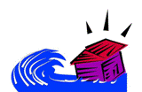

Table
of Contents Table
of Contents
|
| Meal Plan for Disasters and Emergencies |
|
Disasters can occur as the result of a flood, a hurricane or even a tornado, earthquake or terrorism. In worse case scenarios, the electrical power will fail, telephones will not work, roads to the dialysis center will be blocked, or your center will not be operational either because of damage, a lack of water and power, or a lack of staff. If a disaster
occurs, you might have to miss dialysis. Therefore it is important to print off and store this page, and follow these guidelines in the event of an emergency. This diet and fluid restrictions are stricter than the meal plan you ordinarily follow. Also, it is important to know where an alternate dialysis unit is in case the roads are flooded. Your unit should have arrangements for sister facilities that can be followed in these times.
- The diet order for a disaster situation provides approximately: 40-50 grams protein, 1500 mg sodium,
1500 mg potassium, 500 cc (around one half liter or 2 cups) fluid per day. Chewing gum can help you cope with thirst. Restricting dietary protein is very important in stances where you may be forced to miss dialysis.
- Eat the food in your refrigerator first. The food in your refrigerator
will stay fresh for a few days. Open the refrigerator as little as possible. Use a refrigerator thermometer. If the temperature is over 40o F food must be thrown away after four hours. Without refrigeration, some foods may perish. A can or jar of food requiring refrigeration should not be kept after four hours. Never eat food from a can or jar of food that has been opened more than four hours, or not kept at the right temperature to avoid food poisoning.
- Use paper or plastic disposable plates and utensils, and throw them away after use.
- Tap water may be contaminated. Keep bottled water handy for mixing milk or juice. Mix only small amounts. - 4 ounces at a time.
- Potassium is a major threat during this period of time, so is fluid overload. Many salt substitutes contain potasium, so avoid using them with your meals. Also, use salt free foods and high potassium foods. Limit your fruits and vegetables to minimize potassium intake. Never add salt to your food. In particular, be very careful with canned soups and smoked meats.
- Diabetics: Monitor your blood sugars and avoid sweets. Follow your diet and insulin protocol. Keep instant glucose tablets, sugar, hard candy, low-potassium fruit juice, or sugared soda available to treat low blood sugar. (I know this may sound ridiculous, but in a panic situation we may not be thinking as we should - don't grab for diet soda when your sugar is low!!!). Orange juice and other high potassium juices should be avoided.
- Protein source: Peanut butter is a good source of fat and protein. It does not require refrigeration.
|
|
Emergency kit: Use a waterproof box
with the following supplies
(Check your local camping or fishing store for hard to get items):
|
| Manual can opener
Cooking pot and utensils
Bottled water
paper plates/cups/napkins
plastic
knives/forks/spoons
flashlight with extra batteries (check batteries for expiration)
candles
Waterproof matches
Alcohol hand washing solution
Small bottle of bleach for sanitizing
At least one weeks' worth of
medication in a water-proof container (Check for expiration)
Lantern
Firewood or other source of heat
Food:
Bottled water
Small cans of tunafish or chicken
Box
of dry powdered egg white
Cans of cranberry sauce, bottles of cranberry
juice
Cans of soda (except dark colas)
Individual packages of mayonnaise
small bottle of vegetable oil
salt-free crackers
bags
of rice, pasta, cream of wheat
bag of sugar;
jelly, honey, hard candy,
syrup
containers of powdered, sweetened lemonade, tea, coffee
Six-pack
of liquid nutritional supplement approved by your dietitian
|

|
Summary of Important Recommendations for
Eating During a Disaster
- Lower your protein
intake to one-half (1/2) your normal intake.
- Fluid should be limited
to one-half (1/2) your normal intake.
- Foods high in water should
be limited, (Cooked cereals/pastas, fruits, vegetables, pudding, gelatin,
ice cream, sherbet and ice.)
- Salt free foods should
be used, but NOT salt substitute.
- Foods high in potassium
should be avoided (See "potassium" section).
- Plan ahead for medications.
Always have at least one weeks supply available in a water-proof container.
- An extra copy of your
disaster meal plan should be kept in your emergency food box.
- Person with diabetes
should have foods on hand for low blood sugar (honey, sugar, candy).
|
| |
Here are some web resources, meal plans, lists, instructions. They have been gathered from authoritative sources. Florida has had extensive experience with dealing with the impact of natural weather disasters on dialysis, and we are including information from Florida. - Please print these out in advance. During a disaster, your Internet may not work!!
|
|
Here are some points to remember about disasters and dialysis:
- Infrastructures may be damaged long term. These include roads and buildings. Public utilities like power, water, sewage, transportation services, electronic communication (Internet and phone) and even law enforcement may be down for an indefinite period.
- The dialysis community surrounding the impacted area can help, but communication requests for support will be sporadic. Patients may present without advanced warning or medical records.
- Patients can be dialyzed without medical records as long as a nephrologist writes the orders.
- Patients in whom HbsAg status is not known should be treated as if test results were positive, except they should not be segregated on an isolation machine or in an isolation room.
|
Add a category |
Manage this list |
Add File
|
 nephron.org
nephron.org